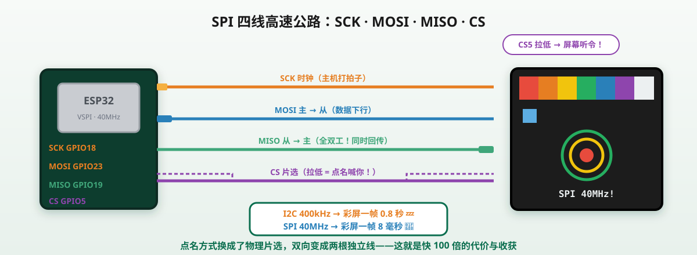

阶段三 · 通信 ｜ 难度：★★★★☆ ｜ 预计用时：50–60 分钟
本课材料：ESP32 开发板 ×1、USB 线 ×1、面包板、1.8 寸 TFT 彩屏（ST7735，SPI 接口） ×1、杜邦线若干 无硬件替代：Wokwi 搜索
TFT-ST7735（或wokwi-st7735），按本课接线表连线，代码完全相同

你将做出：一块 128×160 的彩色 TFT 屏上，色块、圆环、动画帧流畅切换——每秒刷几十帧不卡顿。你会亲手测出它比 OLED 快多少倍，并理解代价：多用两根线。
第 7、8 课的 OLED 是单色的、128×64 的、I2C 的——显示几句字够用，但想画彩色图案、做动画，它的带宽瞬间见底。这一课换上高速公路：SPI。
本课学习目标（完成后你将拥有）：
算一笔账（第 7 课学的 I2C 一笔账还给你）：
OLED 128×64 单色 = 1024 字节 = 8192 bit
I2C 快速模式 400kHz → 传一整屏 ≈ 8192 ÷ 400000 ≈ 20ms（理论最好情况）
再算上地址、应答、字节间 ACK 的开销 → 实际 30~50ms 一帧
→ 每秒最多 20~30 帧，且这是"最好情况"的单色小屏
换成 128×160 彩色屏，16 位色（RGB565）：
一帧 = 128 × 160 × 16 bit = 327,680 bit
I2C 400kHz → 一帧 ≈ 0.82 秒 —— 每秒 1 帧，幻灯片都嫌慢！
SPI 40MHz → 一帧 ≈ 8ms —— 每秒 100+ 帧，丝滑
差了 100 倍。 所以彩屏的世界基本属于 SPI——这不是 I2C 设计得差，而是它的哲学（两根线挂一群低速设备）本来就不是为刷屏准备的。
💡 选型直觉（记住这条）：
- 传感器、EEPROM、RTC、小 OLED → I2C（线少、够快、能挂一群）
- 彩屏、SD 卡、高速 ADC、摄像头 → SPI（快，但每个设备多占引脚）
SPI（Serial Peripheral Interface，串行外设接口） 是 Motorola 在 1980 年代发明的同步总线。它的设计极其直白：
┌────────┐
SCK ───→│ │───→ SCK 时钟：主机打拍子（像 I2C 的 SCL）
MOSI ───→│ ESP32 │───→ MOSI 主出从进：主机发数据
MISO ←───│ (主机) │←─── MISO 主进从出：从机回数据
CS1 ───→│ │───→ ┐
CS2 ───→│ │───→ ┤ 片选：一根线喊一个从机！
└────────┘ ├→ 设备1
└→ 设备2
| 线 | 全名 | 方向 | 干什么 |
|---|---|---|---|
| SCK | Serial Clock | 主机 → 所有从机 | 时钟，每个脉冲过 1 位（同步，和 I2C 的 SCL 一样） |
| MOSI | Master Out Slave In | 主机 → 从机 | 主机发的数据 |
| MISO | Master In Slave Out | 从机 → 主机 | 从机回的数据 |
| CS / SS | Chip Select（片选） | 主机 → 单个从机 | 拉低谁，谁就参与对话 |
第 7 课 I2C 点名靠地址帧（数据里带 7 位编号）；SPI 点名靠物理引脚：
每个从机独占一根 CS 线。主机想和谁说话，就把谁的 CS 拉到低电平——被选中的从机才把数据放上 MISO，其他人高阻旁听（相当于闭嘴）。
对比着记：
| I2C 点名 | SPI 点名 | |
|---|---|---|
| 方式 | 数据帧里带 7 位地址 | 独立 CS 引脚拉低 |
| 代价 | 零额外引脚，但要发地址+等 ACK | 每设备 +1 根 CS，但选中即可通信 |
| 谁快 | 地址、应答挤占带宽 | 没有地址/应答开销，纯数据 |
这就是"线数 vs 速率"的取舍：I2C 把点名做进了数据里（省线费时间），SPI 把点名做成了硬件（费线省时间）。
I2C 的 SDA 是一根线双向用（同一时刻只能一个方向，半双工）；SPI 的 MOSI 和 MISO 是两根独立的线：
主机在发的同时，从机可以在收——双向同时进行，这叫全双工（Full Duplex）。 就像两个人各拿一部电话同时说话，而不是抢一部对讲机。
某些从机（比如闪存芯片 W25Q）支持"发一个命令字节的同时接收一个字节"——全双工让一次事务的时间几乎减半。
一次 SPI 事务（以 ST7735 为例）：
CS 拉低 ─┐ ┌──────────────────────────┐ ┌─ CS 拉高
│ │ 命令字节 数据字节… │ │
SCK: ───┘ └──────────────────────────┘ └──── (主机产生，几十 MHz)
MOSI: ══ 0x2A ══ 0x00 ══ 0x00 ══ 0x7F ══ ... (主机 → 从机)
MISO: ─────────（本课从机不回话，但线留着） (从机 → 主机)
三个和 I2C 不一样的地方，逐个拆：
"数据帧"回扣第 5 课：第 5 课说 UART 是"逐字节无结构的裸数据流"——SPI 更进一步，连字节边界都由 CS 定义：CS 拉低期间发的所有位是一个完整事务，拉高即分帧。"帧（Frame）"这个概念从本课开始，第 10 课讲蓝牙数据包时直接复用。
ST7735 模块常见 8 针，本课用 6 针（背光可以直连 3V3 或悬空）：
| TFT 引脚 | ESP32 引脚 | 说明 |
|---|---|---|
| VCC | 3V3 | 供电（有的模块标 5V 容忍，接 3V3 最稳） |
| GND | GND | 共地（第 5 课，第三次强调） |
| SCL / SCK | GPIO18 | SPI 时钟（ESP32 默认 VSPI 的 SCK） |
| SDA / MOSI | GPIO23 | SPI 主出从进（ESP32 默认 VSPI 的 MOSI） |
| RES | GPIO4 | 复位（接普通 IO，代码里软件复位） |
| DC | GPIO2 | 数据/命令选择（⚠️ strapping 脚，第 6 课清算过！） |
| CS | GPIO5 | 片选（也是 strapping 脚，输出没问题） |
| BL | 3V3 或悬空 | 背光 |
⚠️ 第 6 课知识的第一次实战应用：
- DC 接 GPIO2：GPIO2 是 strapping 脚，开机瞬间若被拉高可能影响下载模式。TFT 模块的 DC 是输入脚（ESP32 驱动它），正常不会把 2 拉高到坏事——但你要知道为什么教程敢用它：输入方向 + 模块不主动驱动 → 安全。若你的模块开机异常，把 DC 换到 GPIO13/14 等普通脚（代码改一个宏即可）。
- 本课全程不碰模拟输入，所以 Wi-Fi/ADC2 的坑不存在；21/22 仍归 I2C（如果 OLED 还挂着，SPI 和 I2C 可以同时工作，互不干扰——总线共存）。
Wokwi 方案：添加
TFT-ST7735，按上表接线；OLED 可以留着——本课结尾的彩蛋代码会让两块屏同时显示。
// ============================================
// 第 9 课：SPI 高速通信 —— ST7735 彩屏
// ============================================
#include <SPI.h>
#include <Adafruit_ST7735.h> // 库管理器安装 Adafruit ST7735 and ST7789
// —— SPI 硬件引脚（ESP32 默认 VSPI：SCK=18, MOSI=23）——
#define TFT_SCK 18
#define TFT_MOSI 23
#define TFT_CS 5
#define TFT_DC 2
#define TFT_RST 4
// Adafruit_ST7735 构造：CS, DC, RST（SCK/MOSI 走全局 SPI）
Adafruit_ST7735 tft = Adafruit_ST7735(TFT_CS, TFT_DC, TFT_RST);
unsigned long lastFrame = 0;
int frame = 0;
void setup() {
Serial.begin(115200);
Serial.println("SPI 彩屏启动");
// —— 初始化（顺序有讲究）——
tft.initR(INITR_BLACKTAB); // ① 按模块型号选初始化表（见下方说明）
tft.setRotation(1); // ② 横屏（0=竖，1=+90°）
tft.fillScreen(ST7735_BLACK); // ③ 清屏为黑
// —— 画静态测试图 ——
drawTestPattern();
Serial.println("初始化完成，开始动画");
}
void drawTestPattern() {
// 顶部色带：8 色
uint16_t colors[8] = {
ST7735_RED, ST7735_GREEN, ST7735_BLUE, ST7735_YELLOW,
ST7735_CYAN, ST7735_MAGENTA, ST7735_WHITE, ST7735_BLACK
};
for (int i = 0; i < 8; i++) {
tft.fillRect(i * 20, 0, 20, 30, colors[i]);
}
// 中部圆环
tft.drawCircle(80, 85, 30, ST7735_GREEN);
tft.drawCircle(80, 85, 20, ST7735_YELLOW);
tft.fillCircle(80, 85, 8, ST7735_RED);
// 文字
tft.setTextColor(ST7735_WHITE, ST7735_BLACK);
tft.setTextSize(1);
tft.setCursor(4, 130);
tft.print("SPI 40MHz!");
}
void loop() {
// —— 每 100ms 一帧动画：移动的色块 ——
if (millis() - lastFrame >= 100) {
lastFrame = millis();
frame++;
// 擦上一帧（画黑块），画这一帧（彩块）——局部刷新思维
int prevX = 4 + ((frame - 1) % 12) * 10;
int x = 4 + (frame % 12) * 10;
tft.fillRect(prevX, 55, 10, 14, ST7735_BLACK);
tft.fillRect(x, 55, 10, 14, ST7735_CYAN);
// 每 20 帧换一次底部状态栏颜色，展示大块区域高速填充且不闪整屏
if (frame % 20 == 0) {
uint16_t bg = (frame % 40 == 0) ? ST7735_NAVY : ST7735_BLACK;
tft.fillRect(0, 120, 160, 40, bg);
tft.setTextColor(ST7735_WHITE, bg);
tft.setCursor(4, 130);
tft.print("SPI 40MHz! #"); tft.print(frame);
Serial.print("帧 #"); Serial.println(frame);
}
}
}
#include <SPI.h>
SPI 是硬件外设，Arduino 自带库。Wire 对应 I2C，SPI 对应 SPI——两个总线库名就是协议名。
Adafruit_ST7735 tft(CS, DC, RST);
构造时只给三根控制线——SCK/MOSI 不用写，因为它们是 ESP32 的固定硬件 SPI 引脚（18/23）。这与 I2C 的 Wire.begin(21, 22) 对比：SPI 有专门的硬件引脚对，速度正是从这里来的（硬件控制器直连，不经 GPIO 模拟）。
① tft.initR(INITR_BLACKTAB)——初始化表是什么？
ST7735 有多个厂家变体（黑标/红标/绿标），上电命令序列不同（几十条寄存器写入）。选错表 → 花屏、颜色反转、区域错位。"型号对不上"是 SPI 屏排错第一坑（对应报错表第一行）。
② setRotation(1)——方向是"逻辑旋转"
屏幕控制器的扫描方向由寄存器决定，setRotation 就是改它——不是把画面重画，是改扫描顺序，零成本。
③ fillScreen vs fillRect——全屏 vs 局部
和第 7、8 课 OLED 的刷新策略一模一样：能局部就不全屏。注意本课动画里"擦旧画新"的双缓冲思维——prevX 擦、x 画，每一帧只动 10×14 个像素，所以 40MHz 的 SPI 跑起来绰绰有余。
millis() 节奏（第 3 课，第三次登场）
100ms 一帧 = 10fps 动画。零 delay——如果你用 delay(100)，蓝牙/串口又会瘫（第 10 课马上要你亲手验证这件事）。
注意：这是理论下限——I2C 实际还要加上每字节 ACK、起始/停止位，真实差距更大。选型先问数据量：小传感器 → I2C；刷屏/存储 → SPI。
上图把同一个"传一整屏"的任务分别丢给 I2C（400kHz）和 SPI（40MHz）——看两条进度条的速度差。点按钮切换任务大小（小图标 / 单色屏 / 彩屏），体会为什么选型时先问"数据量多大"。
Adafruit ST7735 and ST7789 Library（连带 Adafruit GFX）SPI 40MHz! 文字清晰显示帧 #N，数字连续无跳变全部打勾 → 你掌握了嵌入式两大主流总线，具备"按数据量选型"的能力。通信篇还剩最后一块拼图：这些协议传的到底是什么"内容"？第 10 课揭晓——顺便清算 delay 的最后一桩罪。
fillCircle 画两个眼睛、drawArc（或几段圆弧）画嘴——熟悉 SPI 屏的图形原语。| 现象 / 报错关键词 | 原因 | 解决办法 |
|---|---|---|
| 全屏雪花点/颜色整体反转 | ① 初始化表选错（INITR_BLACKTAB/REDTAB/GREENTAB）② SPI Mode 不对 | 换 initR() 参数试；库一般已固定 Mode 0，查模块手册确认 |
| 屏幕纯白/纯黑无反应 | ① CS 没接或接错 ② RST 悬空 ③ SPI 引脚接错 | 查 CS=5、RST=4、SCK=18、MOSI=23；背光单独确认 |
| 显示区域错位（只占一半/条纹） | 分辨率初始化参数与模块不符 | 换 INITR_144TAB/INITR_MINI160x80 等对应你屏的表 |
| 文字镜像/倒置 | setRotation 值不对 |
0/1/2/3 轮着试，选正对你的方向 |
| 动画有拖影、残影 | 擦除不及时（帧间隔太短或没擦旧帧） | 恢复"擦旧画新"逻辑；或加大帧间隔 |
编译报错 SPI 未定义 |
板型选错 / 库缺失 | 开发板选 ESP32 Dev Module；装 SPI（自带） |
| 接上后连第 8 课 OLED 都不工作了 | 两总线接线短路/共用引脚冲突 | I2C 用 21/22，SPI 用 18/23——不重叠，逐线核对 |
| 屏幕能亮但串口没输出 | 监视器波特率不是 115200 | 改监视器速率 |
两大总线你都拿下了——但它们传的"内容"还是一串串裸字节，谁来规定第一个字节是什么意思、错了一个 bit 谁负责？ 第 10 课：蓝牙控制与 millis——delay 的最后一桩罪：你会用手机蓝牙（BLE）控制板上的灯，然后亲手制造一次"按下按钮没反应"的事故——凶手正是第 3 课被你扔掉一半的 delay。那一课同时回收三颗埋了 8 课的雷：delay 断蓝牙、按键抖动根治、"帧与校验"的实战意义。
本课程系列：从点亮一盏灯，到设计一台会自己思考的机器。